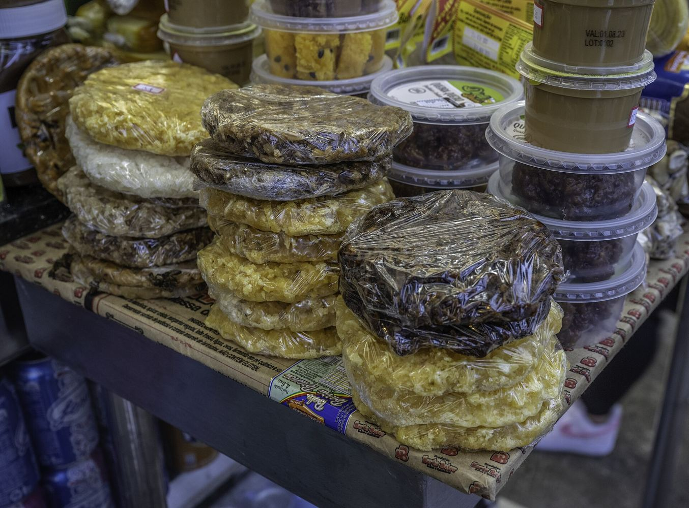

Contabilidade
Ajudar a organizar as contas e entender obrigações.
Contador, designer, advogado e outros profissionais. Cadastre seu interesse e conheça a Rede de Apoio.
A Rede de Apoio aproxima vendedores ambulantes de empresas e profissionais que podem ajudar em necessidades práticas do negócio. Quem trabalha em movimento já conhece a rua, os clientes e o produto. O que ajuda é ter quem apoie no resto.
Cadastrar meu interesse
Ajudar a organizar as contas e entender obrigações.
Separar o dinheiro da casa do dinheiro do negócio.
Criar uma identidade visual simples: placa, adesivo, cartão.
Ajudar a divulgar o trabalho do vendedor.
Esclarecer dúvidas sobre documentos e regras de venda na rua.
Tem outra especialidade? Conte pra gente.
Sua empresa pode oferecer serviços ou orientação para vendedores ambulantes.
Não precisa ter CNPJ. Você escolhe as áreas em que atua.
Não. Profissionais autônomos também podem participar.
As condições ainda serão definidas e informadas para quem se cadastrar.
Pode. Marque as áreas em que atua.
A rede está em desenvolvimento. Cadastre seu interesse e avisamos quando houver novidade.
Entraremos em contato conforme a rede avançar.
Cadastre seu interesse. Avisamos conforme a Rede de Apoio avançar.